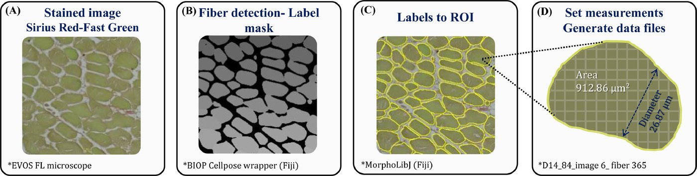

Automated histology analysis
Muscle sections stained with Sirius Red/Fast Green and imaged on the unit's EVOS FL Auto are measured automatically: a Fiji workflow finds every muscle fibre with Cellpose, turns the fibres into regions with MorphoLibJ and exports their diameter and area. The method is published in Poultry Science (2023), and the Fiji workflow is free to download from Zenodo.
The paper Fiji workflow on Zenodo In the publications gallery
Figure 1 from Dayan et al., Poultry Science (2023): A deep learning-based automated image analysis for histological evaluation of broiler pectoral muscle. Licence: CC BY 4.0. Reproduced by the authors. Resized for the web.